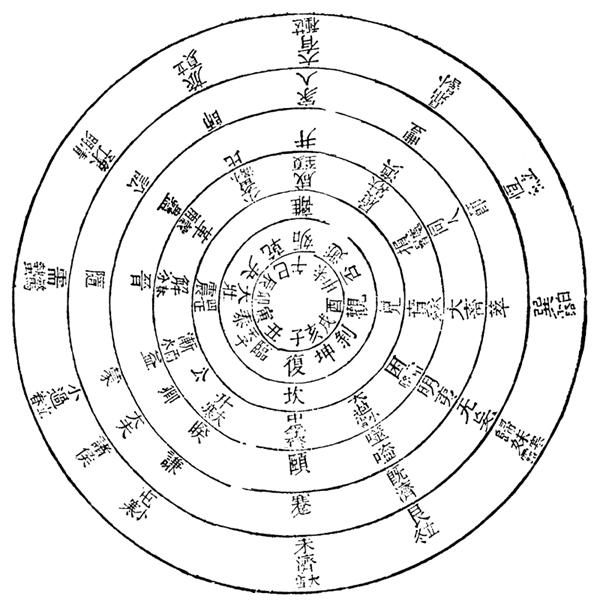
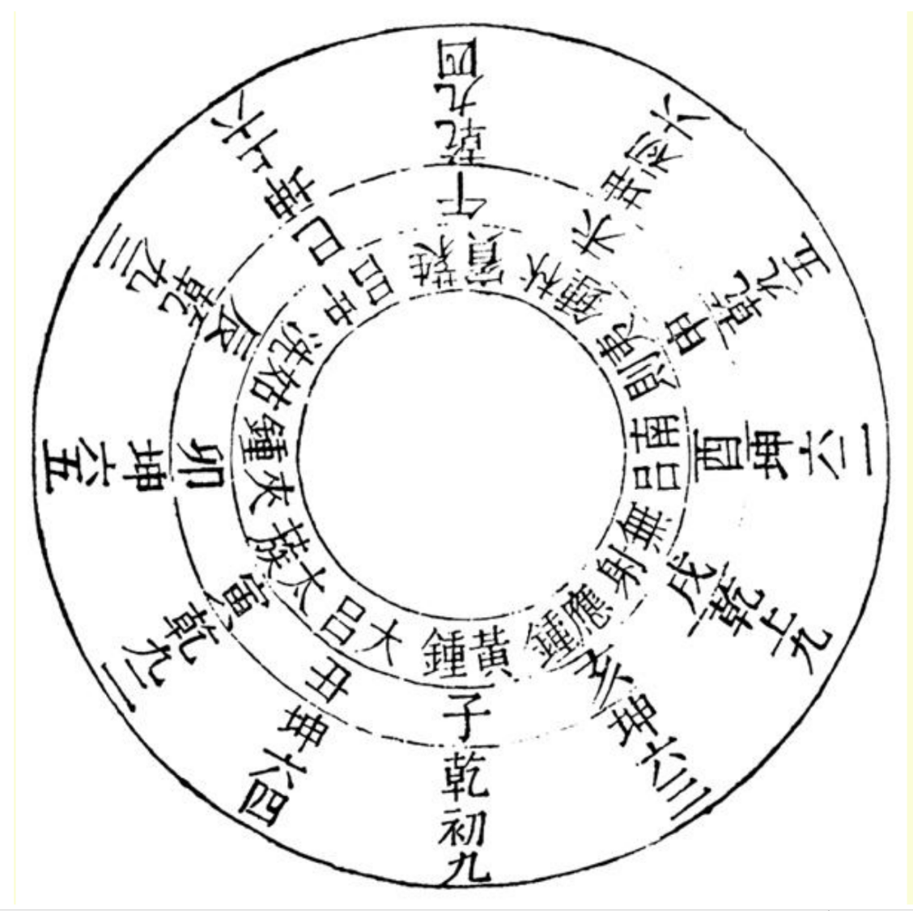
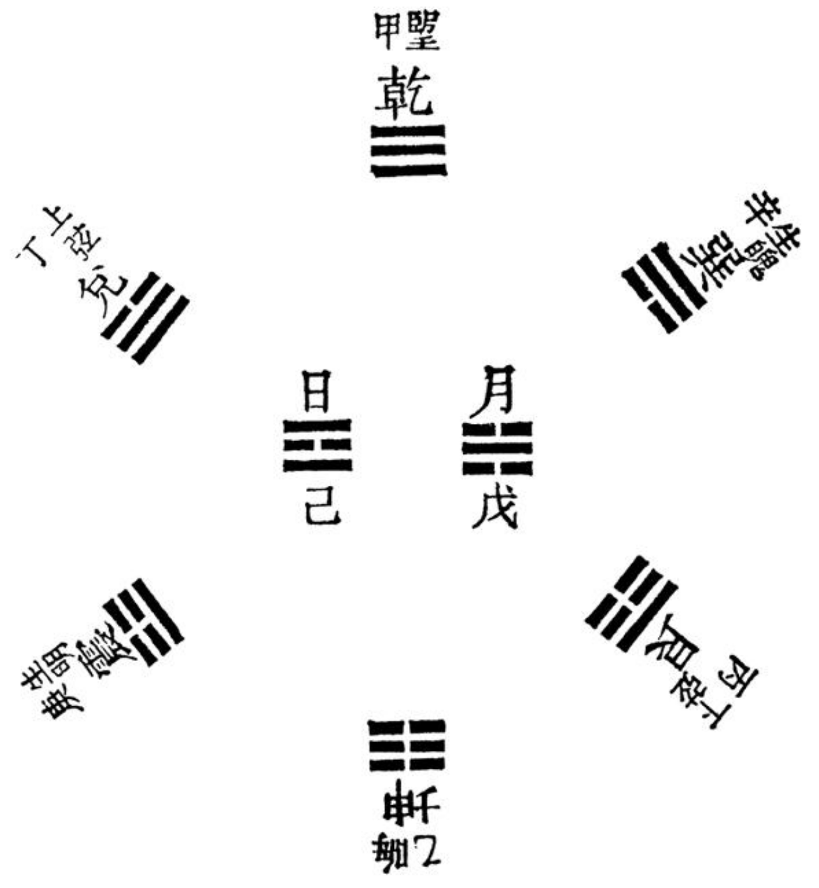
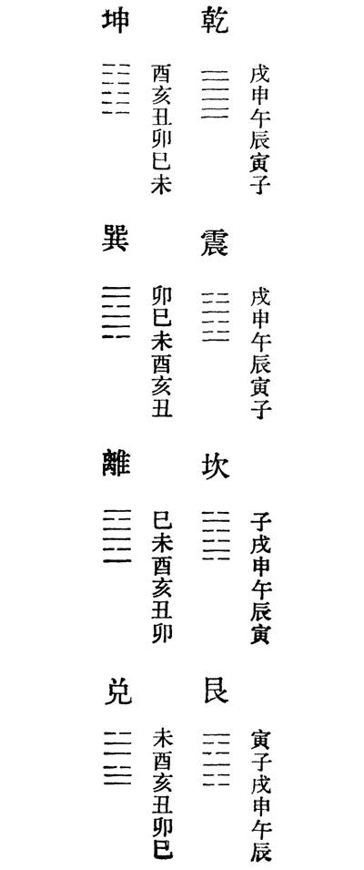
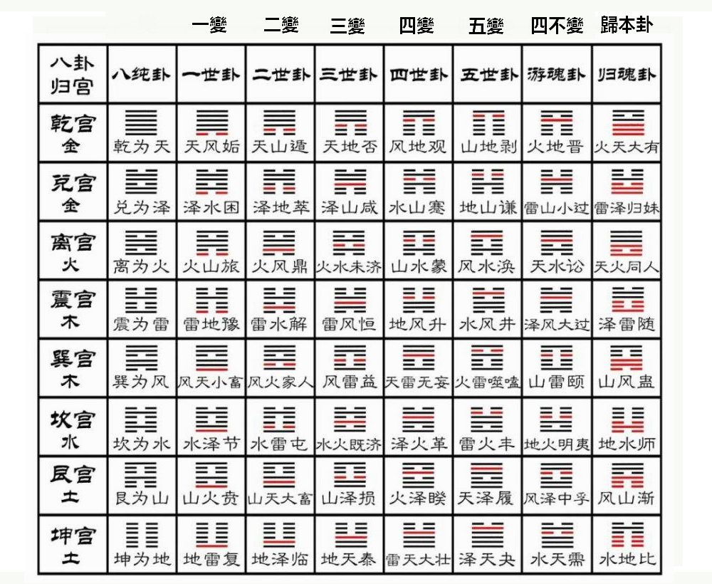
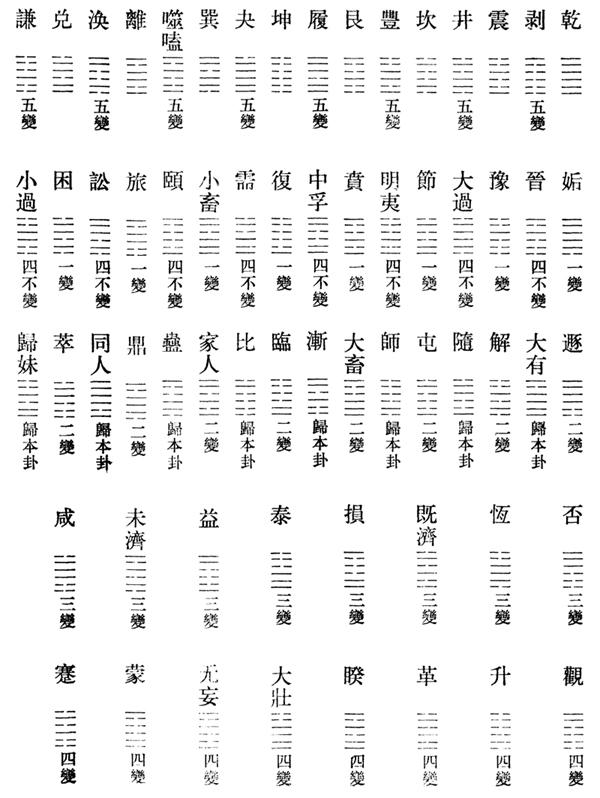
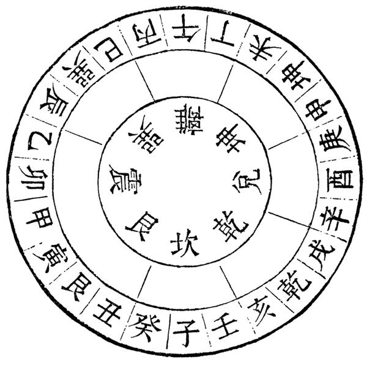

卦氣之説，出于易緯稽覽圖。其書首言：「甲子卦氣起中孚，六日八十分之七而從，四時卦其一辰餘而從，坎常以冬至日始效，復生坎七日。消息及雜卦相去，各如中孚。」攷其法，以坎、離、震、兑四正卦爲四時方伯之卦。餘六十卦，分布十二月，主六日七分。又以自復至坤十二卦爲消息。餘雜卦主公、卿潘校：「卿」下脱「大夫」二字，據卦氣圖補。、大夫、侯。風雨寒温以爲徵應。蓋即孟喜、京房之學所自出也。漢世大儒言易者，多宗之。今列圖于左，俾讀者有所攷焉。

剥彖傳曰「君子尚消息盈虚」，豐彖傳曰「天地盈虚，與時消息」，故古人稱「伏羲作十言之教」，謂「乾、坤、震、巽、坎、離、艮、兑、消、息」。易緯稱「聖人因陰陽起消息，立乾坤以統天地」。稽覽圖云「唯消息及四時卦當盡其日」，又云「消息及雜卦相去，各如中孚」。太史公亦曰「黄帝考定星曆，建立五行，起消息」，皇侃注云「乾者陽生爲息，坤者陰死爲消」。消息之義，蓋已古矣。孟氏傳其學，荀氏言之不能具，惟虞氏所注猶存其概。大抵乾、坤十二辟卦爲消息卦之正。其自臨、遯、否、泰、大壯、觀生者，謂之爻例。自乾、坤生者，不從爻例。每二卦旁通，則皆消息卦也。消息卦皆在乾、坤相合之時，則剥、復、夬、姤、泰、否之交也。近惟武進張氏言之最精，其詳具所著周易虞氏消息。
爻辰者，以乾、坤十二爻，左右相錯，當十二辰也。乾鑿度曰：「乾，陽也。坤，陰也。竝如而交錯行。乾貞于十一月子，左行陽時六。坤貞于六月未，右行陰時六。以顺成其歲。歲終從于屯蒙。」又云：「陰卦與陽爻同位者，退一辰。以未爲貞，其爻右行，閒時而治六辰。」愚案：乾鑿度之言，與十二律相生之説合。周禮春官太師，鄭玄注云：「黄鍾，初九也，下生林鍾之初六。林鍾又上生泰蔟之九二。泰蔟又下生南吕之六二。南吕又上生姑洗之九三。姑洗又下生應鍾之六三。應鍾又上生蕤賓之九四。蕤賓又上生大吕之六四。大吕又下生夷則之九五。夷則又上生夾鍾之六五。夾鍾又下生無射之上九。無射又上生中吕之上六。」周語韋昭注云「十一月黄鍾，乾初九也。十二月大吕，坤六四也。正月泰蔟，乾九二也。二月夾鍾，坤六五也。三月姑洗，乾九三也。四月中吕，坤上六也。五月蕤賓，乾九四也。六月林鍾，坤初六也。七月夷則，乾九五也。八月南吕，坤六二潘校：「二」原本作「三」，據陳校本正。也。九月無射，乾上九也。十月應鍾，坤六三也」。又京房亦言爻辰，與鄭不同。乾左行陽時六，始于子而終于戌，二家所同。坤右行陰時六，始未而終巳者，鄭氏説也。始未而終酉者，京氏説也。二家同出于律辰。鄭氏本乎月律，即月令十二月所中之律，隔八相生之次也。月律之行順，故爻辰亦順。京氏本乎合聲，周禮太師：「掌以六律六同，以合陰陽之聲。」陽聲：黄鍾、泰蔟、姑洗、蕤賓、夷則、無射。陰聲：大吕、應鍾、南吕、林鍾、中吕、夾鍾。合聲始終之序，不同于月律也。合聲之行逆，故爻辰亦逆。因鄭氏以爻辰言易，而竝録京氏之説，以備參考。後所圖者，鄭氏爻辰也。

乾升坤降，其義出于易緯乾鑿度。陰麗陽而生，陽由七上九，陰由八降六，故陽性欲升，陰性欲承也。繫辭所謂「上下无常，剛柔相易」，即此義也。荀氏説易，多主此義。有以陰陽爻爲升降者，不拘内外。如離與小過四升五是也。有以上下卦爲升降者，不拘乾、坤。如升初與巽一體相隨，升居坤上是也。此陽升陰降之大凡也。
納甲者，乾納甲壬，坤納乙癸，震納庚，巽納辛，艮納丙，兑納丁，坎納戊，離納己。其説莫詳所自始。魏伯陽參同契「三日出爲爽，震庚受西方。八日兑受丁，上弦平如繩。十五乾體就，盛滿甲東方。七八道已訖，屈折低下降。十六轉就統，巽辛見平明。艮直于丙南，下弦二十三。坤乙三十日，東北喪其朋。節盡相禪與，繼體復生龍。壬癸配甲乙，乾、坤括始終」。載籍言納甲者，惟見于此。要之説卦言「天地定位，山澤通氣，雷風相薄」，以三陽三陰至一陽一陰爲序，其後乃言「水火不相射」。蓋以六卦寓消息，而以水火爲用，即此義也。虞氏本此以説易，與經旨適合。其法以震、巽、艮、兑、乾、坤六卦應月候。而坎、離爲日月之本體，居中不用。震直生明者，一陽始生。又生明之時，以初昏候之，月見庚方也。兑直上弦者，二陽浸盛。又上弦之時，以初昏候之，月見丁方也。乾直望者，三陽盛滿。又望時以初昏候之，月見甲方也。巽直生魄，則一陰始生。又生魄之時，以平明候之，月見辛方也。艮直下弦，則二陰浸盛。又下弦之時，以平明候之，月見丙方也。坤直晦，則三陰盛滿。又晦時以平明候之，月見乙方也。此納甲之大凡也，竝列圖于左焉。

納支者，以八卦之六畫，分納陰陽六辰。凡乾在内則爲甲，而納子、寅、辰。如初九爲甲子，九二爲甲寅，九三爲甲辰也。在外卦則爲壬，而納午、申、戌。如九四爲壬午，九五爲壬申，上九爲壬戌也。凡坤在内卦則爲乙，而納未、巳、卯。如初六爲乙未，六二爲乙巳，六三爲乙卯也。在外卦則爲癸，而納丑、亥、酉。如六四爲癸丑，六五爲癸亥，上六爲癸酉也。因乾、坤各納兩干，故别爲内外二卦。若震止納庚，則初九爲庚子，六二爲庚寅，六三爲庚辰，九四爲庚午，六五爲庚申，上六爲庚戌。巽止納辛，則初六爲辛丑，九二爲辛亥，九三爲辛酉，六四爲辛未，九五爲辛巳，上九爲辛卯。坎、離、艮、兑四卦，依震、巽例推之。今火珠林即其法也。

六親爻例起于京君明。京氏積算法云：「孔子曰‘八卦鬼爲繫爻，財爲制爻，天地爲義爻’，陸績注云‘天地即父母也’。‘福德爲寶爻’，注云‘福德即子孫也’。‘同氣爲專爻’，注云‘兄弟爻也’。」法以八卦六位，乾屬金，主甲子壬午。坤屬土，主乙未癸丑。震屬木，主庚子庚午。巽屬木，主辛丑辛未。坎屬水，主戊寅戊申。離屬火，主己卯己酉。艮屬土，主丙辰丙戌。兑屬金，主丁巳丁亥。各以陰陽順逆而治六辰。從世卦五行，論其生剋，命其六親。如乾初甲子，子爲水，金生水爲義爻。乾外壬午，午爲火，火剋金爲制爻是也。其餘可以例推。
八宫卦本京氏易。蓋乾、坤生六子，八純卦生五十六卦，爲六十四卦也。易傳積算法云：「孔子易云：『潘校：「易云」二字倒誤，據所引易傳積算法文乙。本菁華茗書閣按：叢書集成初編本正作「易云」。有四易：一世二世爲地易，三世四世爲人易，五世八純爲天易，游魂歸魂爲鬼易』。」其法六十四卦分八宫，乾、震、坎、艮，坤、巽、離、兑爲次。八卦本象爲八純，世在上。變初爲一世，以次而至五，則上爻不變。四反而爲游魂，下體皆復而爲歸魂。游歸之卦，乾坤用離坎，離坎用乾坤。震巽用兑艮，兑艮爲震巽。


納甲應情之説，始于翼奉，無關易義。惟干氏釋經，閒用此例，故詳著焉。漢書翼奉傳曰：「北方之情，好也。好行貪狼，申子主之。」孟康注云：「水性觸地而行，觸物而潤，多所好故，多好則貪而無厭，故爲貪狼也。」又曰：「東方之情，怒也。怒行陰賊，亥卯主之。」注云：「木性受水氣而生，貫地而出，故爲怒。以陰氣賊害土，故爲陰賊也。」又曰：「南方之情，惡也。惡行廉貞，寅午主之。」注云：「火性炎猛，無所容受，故爲惡。其氣精專嚴整，故爲廉貞。」又曰：「西方之情，喜也。喜行寬大，己酉主之。」注云：「金之爲物，喜以利刃加于萬物，故爲喜。利刃所加，無不寬大，故曰寬大也。」又曰：「上方之情，樂也。樂行姦邪，辰未主之。」注云：「上方謂北與東也，陽氣所萌生，故爲上。辰窮水也，未窮木也。翼氏風角云‘木落歸本，水流歸末’，故木利在亥，水利在辰。盛衰各得其所，故樂也。水窮則無隙不入，木上出窮則旁行，故爲姦邪。」又曰：「下方之情，哀也。哀行公正，戌丑主之。」注云：「下方謂南與西也，陰氣所萌故爲下。戌窮火也，丑窮金也。翼氏風角云‘金剛火彊，各歸其鄉’，故火刑于午，金刑于酉。酉午，金火之盛也。盛時而受刑，至窮無所歸，故曰哀也。火性無所私，金性方剛，故曰公正。」
胡一桂：「京房起月例云：一世卦。陰主五月，一陰在午也。陽主十一月，一陽在子也。二世卦。陰主六月，二陰在未也。陽主十二月，二陽在丑也。三世卦。陰主七月，三陰在申也。陽主正月，三陽在寅也。四世卦。陰主八月，四陰在酉也。陽主二月，四陽在卯也。五世卦。陰主九月，五陰在戌也。陽主三月，五陽在辰也。八純上世。陰主十月，六陰在亥也。陽主四月，六陽在巳也。游魂四世，所主與四世卦同。歸魂三世，所主與三世卦同。」案：自納支以下，干氏易多用之。蓋干氏説易，多附人事，而取例亦比諸家較雜也。
二十四方位，即陰陽家二十四山也。其實漢人言易，多用此法。其義最古，故録之以備參考。八卦惟用四隅，而不用四正者，以四正卦正當地支子午卯酉之位，故不用卦而用支。用支即用卦也。八卦既定，四正則以八干輔之：甲乙夾震，丙丁夾離，庚辛夾兑，壬癸夾坎。四隅則以八支輔之：戌亥夾乾，丑寅夾艮，辰巳夾巽，未申夾坤。合四維八干十二支，共二十四。天干不用戊己者，戊己爲中央土，無定位也。今列圖于左。

本章完!